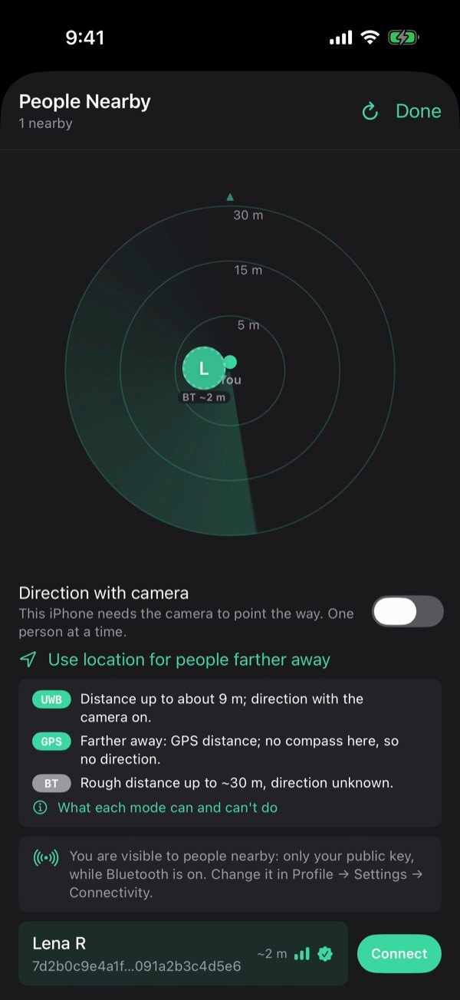

Bluetooth: friends nearby
Chat with no internet, only after Allow
People nearby
Anyone near you with Viper and Bluetooth on shows up above your chats and in Search, with a rough distance if they share it.


Bluetooth asks first
Tap Connect in the chat's ⚡ or on the radar. Their phone shows a card: Allow or Decline. Every new link asks, contacts too, and cards stack.
No internet needed
Once linked, messages and files go phone to phone, end-to-end encrypted. Messages reach you in the background too, with a notification.
TON Drop: where it stands
- Works now Discovery over Bluetooth. People Nearby shows Viper users around you, roughly how far away.
- Works now Fully offline chat over Bluetooth. Messages, voice notes, video circles and files go phone to phone with no network.
- Works now Bluetooth, then direct over the internet. Phones exchange IP addresses over Bluetooth, then connect directly, P2P over the internet with TON.
- In progress A stable link out of range. When either phone's IP address changes, the direct link breaks today. Keeping it needs TON DHT to find each other again.
Earlier on this blog
From the guide in Viper 1.5.34: Profile → Settings → Help → Guides. All posts